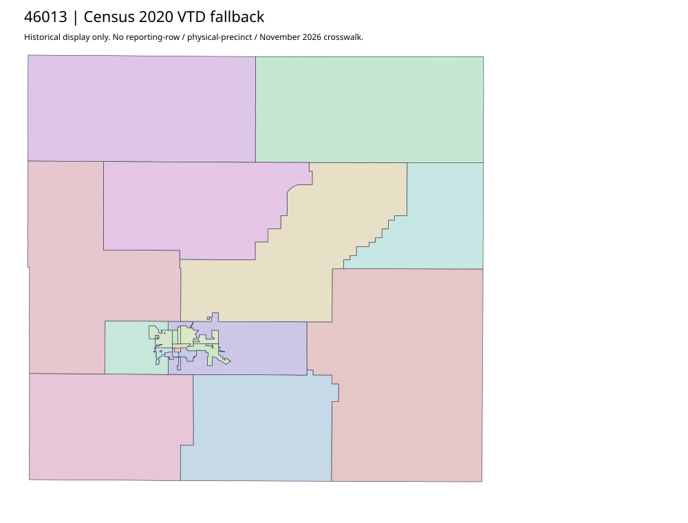

304 ordered indexBrown | 46013
Official elections parent links complete Brown County and Aberdeen PDFs. County filename says effective10/14/25; actual complete map prints LAST UPDATED10/20/2025. Aberdeen filename says as of10/7/25. County map explicitly splits precincts by legislative districts. Vote centers and map precincts are distinct; no absentee or native-row allocation follows.
5 priority / 12 full historical observations. Parent is a summary ancestor, not additive to leaves. No physical feature matches or current reporting crosswalk approved.
Acquired shared-parent assets
map-46013-004-network | complete1-page PDF; all-page contact sheet; complete page1; complete original gzip. Exact reconstruction: python -B scripts/reconstruct.py --id map-46013-004-network /private/tmp/map.pdf
map-46013-005-network | complete1-page PDF; all-page contact sheet; complete page1; complete original gzip. Exact reconstruction: python -B scripts/reconstruct.py --id map-46013-005-network /private/tmp/map.pdf
Census2020 fallback
22 native historical VTD features. Entire785-feature ZIP original retained once, all66 counties. Yankton has one countywide VTD. No current/reporting allocation. complete original gzip

Full binary/attribute/geometry QA
Observed authority/acquisition routes
Complete SOS authority fields including original blank/masked values: parent inventory. No contacts were sent.
Ordered full children
- Absentee Precinct | 8579 source votes | priority
- AmericInn Event Center | 2228 source votes | priority
- Best Western Ramkota Hotel and Convention Center | 1897 source votes | priority
- Courthouse Community Room | 1863 source votes | priority
- Groton Community Center | 858 source votes | priority
- Warner Community Center | 439 source votes | remainder
- Frederick Community Center | 241 source votes | remainder
- Columbia Legion | 237 source votes | remainder
- Hecla Community Center | 214 source votes | remainder
- Westport Town Hall | 194 source votes | remainder
- Stratford Communty Center | 157 source votes | remainder
- Claremont City Hall | 133 source votes | remainder